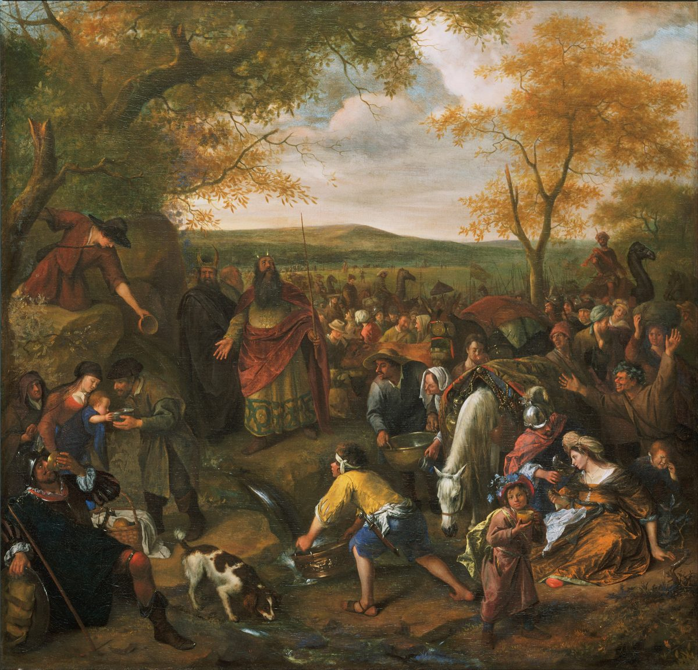

Hebreos 3 — La Traducción Mister

⚠ Agua de la peña en el desierto: la historia de Masah y Meribá en Éxodo 17, la «Prueba» y la «Provocación» que recuerda el Salmo 95 y cita el versículo 8.
_-_Moses_Striking_the_Rock_-_Google_Art_Project.jpg){kind=link}
Notas del traductor
«Hermanos santos, compañeros en un llamamiento celestial, consideren al apóstol y sumo sacerdote de nuestra confesión, Jesús». Metochos, «socio, compañero», está en seis versículos: los «socios» de la otra barca de los pescadores en Lucas 5:7, el Hijo ungido «más que a tus compañeros» en Hebreos 1:9, aquí, el versículo 14, y Hebreos 6:4 y 12:8 (diccionario). Esta traducción dice «compañeros» aquí y en el versículo 14, como en el capítulo 1: el Hijo tenía compañeros, y ahora se llama así a los lectores. «Apóstol» es apostolos, «enviado», un título que los Evangelios y las cartas dan a los hombres que Jesús envía; aquí se da a Jesús, que en el Evangelio de Juan dice «Como el Padre me ha enviado, yo también los envío» (Juan 20:21) (diccionario). «Sumo sacerdote» retoma Hebreos 2:17 (diccionario). Homologia, «confesión», está en seis versículos, entre ellos «confesaste la buena confesión» en 1 Timoteo 6:12 (diccionario). El texto bizantino dice «Cristo Jesús» (el aparato). La RV60 dice «considerad al apóstol y sumo sacerdote de nuestra profesión, Cristo Jesús»; la TNM 1987 dice «consideren al apóstol y sumo sacerdote que nosotros confesamos»; la NVI dice «el apóstol y sumo sacerdote de la fe que confesamos».
⚠ «El cual es fiel al que lo constituyó, como también lo fue Moisés en su casa». «Constituyó» es poieō, «hacer», en el sentido que tiene en el hebreo y el griego de 1 Samuel 12:6, «Jehová, que hizo a Moisés y a Aarón», es decir, que los puso en su oficio (los dos comprobados). El versículo se discutió en los debates del siglo IV sobre si el Hijo era creado, y un lado leía «hizo» como creación y el otro como nombramiento (se informa aquí, no se comprobó). La línea sobre Moisés es Números 12:7, «No así mi siervo Moisés: en toda mi casa él es de confianza», donde el hebreo ne’eman es «de confianza, fiel» (diccionario). El griego impreso, el de Holmes, dice «en su casa»; Westcott–Hort, Tregelles, Nestle–Aland 28 y Robinson–Pierpont dicen «en toda su casa», como lo dice el versículo 5 (el aparato). La RV60 dice «el cual es fiel al que le constituyó»; la TNM 1987 dice «Él fue fiel a Aquel que lo hizo tal»; la NVI dice «Él fue fiel al que lo nombró».
«Tenido por digno de más gloria que Moisés, tanto cuanto el que construyó la casa tiene más honra que la casa». «Construyó» es kataskeuazō, «construir, preparar, equipar», el verbo de Noé, que «construyó un arca» en Hebreos 11:7, y del mensajero que «preparará tu camino» en Mateo 11:10 (diccionario). El versículo 4 pone al constructor de cada casa junto a «el que construyó todas las cosas», Dios; los lectores entienden que el constructor del versículo 3 es el Hijo, por medio del cual Dios «hizo los siglos» (Hebreos 1:2), o Dios mismo, y que la comparación va entre el Hijo y Moisés como miembros de la casa. La RV60 dice «Porque de tanto mayor gloria que Moisés es estimado digno este»; la TNM 1987 dice «tiene más honra que la casa el que la construye»; la NVI dice «así como el constructor de una casa recibe mayor honor que la casa misma».
«Moisés fue fiel en toda su casa como servidor, para testimonio de las cosas que se iban a hablar». Therapōn, «servidor», está en un solo versículo del Nuevo Testamento (diccionario); es la palabra del griego de Números 12:7, «mi servidor Moisés», donde el hebreo tiene ‘eved, «siervo» (los dos comprobados). Es palabra de un servidor libre, distinta de doulos, «esclavo» (diccionario). La fidelidad de Moisés es «testimonio de las cosas que se iban a hablar»: la carta lee la Ley como algo que apunta más allá de sí. El mismo par de un sacerdote fiel y una casa está en 1 Samuel 2:35, donde el hebreo promete «un sacerdote fiel» y «una casa fiel», ne’eman las dos veces (comprobado). La RV60 dice «Y Moisés a la verdad fue fiel en toda la casa de Dios, como siervo»; la TNM 1987 dice «Y Moisés como servidor fue fiel»; la NVI dice «Moisés fue fiel como siervo sobre toda la casa de Dios».
⚠ «Pero Cristo, como Hijo sobre su casa; y esa casa somos nosotros, si retenemos la valentía y la jactancia de nuestra esperanza». «Su casa» se lee como la casa de Dios, la de Números 12:7, o como la del propio Cristo. El texto impreso tiene hos, «la cual [casa] somos»; Westcott–Hort, Tregelles, Nestle–Aland 28 y Robinson–Pierpont tienen hou, «cuya casa somos»; y Westcott–Hort, Tregelles y Robinson–Pierpont añaden «firme hasta el fin», que Nestle–Aland 28 y el texto impreso no ponen aquí y sí en el versículo 14 (el aparato). «Valentía» es parrēsia, la palabra de Hechos 4:13, «viendo la valentía de Pedro y de Juan» (diccionario); «jactancia» es kauchēma (diccionario). «Si» hace condicional la pertenencia, y los lectores se dividen: unos entienden el retener como la prueba de que uno pertenece, otros como una condición que se puede dejar de cumplir. Esta página no elige. La RV60 dice «la cual casa somos nosotros, si retenemos firme hasta el fin la confianza»; la RV 1909 dice «la cual casa somos nosotros»; la TNM 1987 dice «nuestra franqueza de expresión y nuestra jactancia respecto a la esperanza».
«Como dice el Espíritu Santo: “Hoy, si oyen su voz, no endurezcan sus corazones”». La cita es el Salmo 95:7–11 (94 en el Salterio griego), y la carta se la da al Espíritu Santo como el que habla ahora, «dice», en presente. «Hoy» es sēmeron (diccionario), y la carta hará de la palabra el tema de los versículos 13 y 15. «Endurecer» es sklērynō (diccionario). La RV60 dice «Por lo cual, como dice el Espíritu Santo: Si oyereis hoy su voz»; la NVI dice «Si ustedes oyen hoy su voz»; la TNM 1987 dice «Hoy, si ustedes escuchan la propia voz de él».
⚠ «Como en la Provocación, en el día de la Prueba en el desierto». El hebreo del salmo nombra dos lugares, «como en Meribá, como en el día de Masah en el desierto» (comprobado): el lugar de Éxodo 17:7, llamado Masah, «Prueba», y Meribá, «Rencilla» (diccionario; enciclopedia). El griego traduce los nombres. Parapikrasmos, «provocación, amargura», está en dos versículos, aquí y el versículo 15 (diccionario); «la Prueba» es peirasmos, la palabra que usa el griego de Éxodo 17:7 para el nombre Masah (comprobado). Esta traducción pone mayúscula a las dos, para que se lean como los nombres que representan. La RV60 dice «Como en la provocación, en el día de la tentación en el desierto»; la TNM 1987 dice «como en la ocasión de causar amarga cólera»; la NVI dice «como sucedió en la rebelión».
⚠ «Y vieron mis obras durante cuarenta años. Por eso me disgusté con esta generación». En el hebreo del salmo, «cuarenta años» va con el disgusto, «vieron mi obra; cuarenta años aborrecí a una generación», y el Salterio griego conserva ese orden (los dos comprobados). Hebreos une los cuarenta años a «vieron mis obras» y añade «por eso», de modo que los años de ver se vuelven la razón del enojo; en el versículo 17 vuelve a poner los cuarenta años con el enojo, «¿con quiénes se disgustó durante cuarenta años?». Prosōchthizō, «disgustarse, aborrecer», está en dos versículos, aquí y el versículo 17 (diccionario). Dokimasia, «escrutinio, puesta a prueba», está en un solo versículo; el texto bizantino tiene en su lugar el verbo, «me tentaron, me probaron» (el aparato). El texto impreso dice «esta generación»; el texto bizantino y el Salterio griego dicen «aquella generación». La RV60 dice «Donde me tentaron vuestros padres; me probaron, Y vieron mis obras cuarenta años»; la TNM 1987 dice «Por esta razón quedé asqueado de esta generación»; la NVI dice «a pesar de haber visto mis obras cuarenta años».
⚠ «Como juré en mi ira: “No entrarán en mi descanso”». El hebreo es una fórmula de juramento, im yevo’un, «si entran …», con la maldición sin decir, y el griego la conserva palabra por palabra, ei eiseleusontai (los dos comprobados). Significa «no entrarán», y esta traducción lo dice así, como con el mismo juramento en Números 14:23 y 14:30. «Descanso» es katapausis, por el hebreo menuchah (diccionario; diccionario); en Deuteronomio el descanso es la tierra, «el descanso y la heredad» (Deuteronomio 12:9), y el capítulo 4 de la carta lleva la palabra más lejos. Katapausis está en ocho versículos: Hechos 7:49, «¿cuál es el lugar de mi reposo?», y siete en Hebreos 3–4. La RV 1909 dice «Juré, pues, en mi ira: No entrarán en mi reposo»; la RV60 dice «Por tanto, juré en mi ira: No entrarán en mi reposo»; la NVI dice «Jamás entrarán en mi reposo».
«Miren, hermanos, que no haya en ninguno de ustedes un corazón malo de incredulidad, al apartarse del Dios vivo». Apistia, «incredulidad», está en once versículos, entre ellos este y el versículo 19 (diccionario). «Apartarse» es aphistēmi, el verbo de Lucas 8:13, «en tiempo de prueba se apartan», y de 1 Timoteo 4:1, «algunos se apartarán de la fe» (diccionario). «El Dios vivo» es la frase de Pedro en Mateo 16:16, «el Hijo del Dios viviente». La RV60 dice «corazón malo de incredulidad para apartarse del Dios vivo»; la TNM 1987 dice «un corazón inicuo y falto de fe al alejarse del Dios vivo»; la NVI dice «un corazón pecaminoso e incrédulo».
«Exhórtense unos a otros cada día, mientras se dice “Hoy”, para que ninguno de ustedes sea endurecido por el engaño del pecado». El «Hoy» del salmo se vuelve un plazo: mientras la palabra se siga diciendo, la advertencia sigue abierta. «Exhortar» es parakaleō, llamar al lado, animar, instar. «Engaño» es apatē, como en «el engaño de las riquezas» de Marcos 4:19. La RV60 dice «antes exhortaos los unos a los otros cada día, entre tanto que se dice: Hoy»; la NVI dice «anímense unos a otros cada día»; la TNM 1987 dice «por el poder engañoso del pecado».
⚠ «Porque hemos llegado a ser compañeros de Cristo, con tal que retengamos firme hasta el fin el principio de nuestra confianza». «Confianza» es hypostasis (diccionario), que está en cinco versículos (hypostasis): «por haber confiado en ustedes» en 2 Corintios 9:4 y «esta confianza de la jactancia» en 2 Corintios 11:17; «la impronta exacta de su sustancia» en Hebreos 1:3; aquí; y «el fundamento de lo que se espera» en Hebreos 11:1. Aquí esta traducción dice «confianza», el sentido de los dos versículos de 2 Corintios; los lectores que conservan «sustancia» lo entienden como la realidad de la posición de los creyentes. «Firme» es bebaios, la palabra de Hebreos 2:2. «Compañeros de Cristo» se lee como participar de Cristo o como ser sus socios. La RV60 dice «con tal que retengamos firme hasta el fin nuestra confianza del principio»; la RV 1909 dice «el principio de nuestra confianza»; la TNM 1987 dice «la confianza que tuvimos al principio».
«Mientras se dice: “Hoy, si oyen su voz, no endurezcan sus corazones como en la Provocación”». La línea se lee con lo que va antes («retengamos firme … mientras se dice») o como comienzo de lo que sigue («Mientras se dice … ¿quiénes fueron?»). La RV60 dice «entre tanto que se dice: Si oyereis hoy su voz»; la NVI dice «Como se acaba de decir»; la RV 1909 dice «No endurezcáis vuestros corazones, como en la provocación».
⚠ «Porque ¿quiénes fueron los que oyeron y provocaron? ¿No fueron todos los que salieron de Egipto por medio de Moisés?». Las letras griegas pueden leerse de dos maneras, según el acento: tínes, «¿quiénes?», una pregunta, o tinés, «algunos». Las ediciones modernas imprimen la pregunta, y los versículos 17 y 18 son también preguntas. Las versiones antiguas leen «algunos … aunque no todos», pensando en Caleb y Josué, los dos exceptuados en Números 14:30. Parapikrainō, «provocar», está en un solo versículo; es el verbo del sustantivo de los versículos 8 y 15. La RV 1909 dice «Porque algunos de los que habían salido de Egipto con Moisés, habiendo oído, provocaron, aunque no todos»; la RV60 dice «¿Quiénes fueron los que, habiendo oído, le provocaron?»; la TNM 1987 dice «¿no lo hicieron todos los que salieron de Egipto bajo Moisés?».
«Con los que pecaron, cuyos cadáveres cayeron en el desierto». Las palabras son las de Números 14:29, «En este desierto caerán vuestros cadáveres» (diccionario). Kōlon, «miembro, cadáver», está en un solo versículo del Nuevo Testamento; es la palabra del griego de Números 14:29 (comprobado) (diccionario). La RV60 dice «cuyos cuerpos cayeron en el desierto»; la TNM 1987 dice «cuyos cadáveres cayeron en el desierto»; la NVI dice «los cuales cayeron muertos en el desierto».
«A los que desobedecieron … a causa de la incredulidad». El versículo 18 tiene apeitheō, «desobedecer, negarse a ser persuadido» (diccionario), y el versículo 19 tiene apistia, «incredulidad»: la carta pone juntos la negativa y la falta de confianza y hace de ellos una sola falta. Esta traducción dice «desobedecieron» aquí, donde el versículo siguiente pone «incredulidad», y «se negaron a creer» para el mismo verbo en Hebreos 11:31. La RV 1909 dice «sino á aquellos que no obedecieron»; la RV60 dice «sino a aquellos que desobedecieron»; la TNM 1987 dice «sino a los que habían actuado desobedientemente».
Patrones que vale la pena recordar
Dónde esta traducción conserva las palabras exactas: «compañeros» para metochoi, como en 1:9; «apóstol» y «sumo sacerdote»; «confesión», como en 1 Timoteo 6:12; «constituyó», con «hizo» en la nota; «construyó», como en 11:7; «servidor» para therapōn; «valentía», como en Hechos 4:13; «la Provocación» y «la Prueba», por Meribá y Masah; «cuarenta años» donde los pone Hebreos; «me disgusté»; «No entrarán», con el juramento en la nota; «descanso»; «apartarse», como en Lucas 8:13; «confianza» para hypostasis, como en 2 Corintios; «firme», como en 2:2; «cadáveres», como en Números 14:29; y «desobedecieron» junto a «incredulidad».
Ecos pagados. Los compañeros de Hebreos 1:9; el sumo sacerdote de Hebreos 2:17; la buena confesión de 1 Timoteo 6:12; Moisés, de confianza en toda mi casa, de Números 12:7; Noé, que construyó un arca en Hebreos 11:7; la valentía de Hechos 4:13; Masah y Meribá, de Éxodo 17:7; el juramento de Números 14:23; el descanso de Deuteronomio 12:9; el apartarse de Lucas 8:13; el engaño de Marcos 4:19; la confianza de 2 Corintios 9:4; lo firme de Hebreos 2:2; los cadáveres de Números 14:29; y Caleb y Josué, exceptuados en Números 14:30.
Ecos sembrados. «Mi descanso» y «Hoy» en Hebreos 4; «compañeros» en 6:4 y 12:8; «confesión» en 4:14 y 10:23; y «el Dios vivo» en 9:14, 10:31 y 12:22 (ninguno todavía en estas páginas).
A continuación en este libro: Hebreos 4. «Temamos, pues, mientras sigue en pie la promesa de entrar en su descanso»; el séptimo día y «un reposo sabático para el pueblo de Dios»; la palabra de Dios «más cortante que toda espada de dos filos»; y un sumo sacerdote «probado en todo según nuestra semejanza, pero sin pecado».